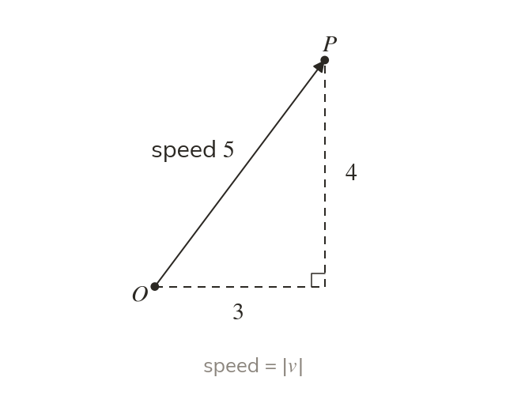
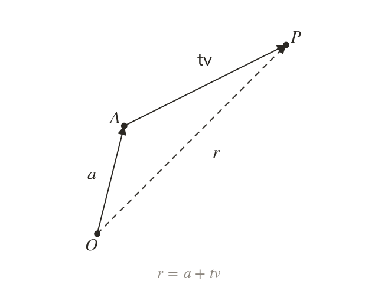
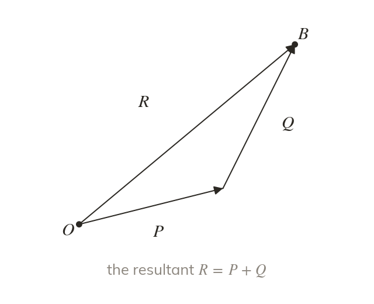
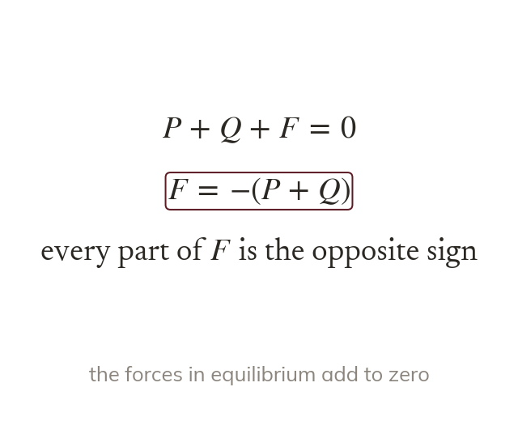

Speed is a magnitude
The speed is the magnitude of the velocity, and the direction of the velocity is the direction of motion. So a velocity of is a speed of
Velocity, displacement and force are all vectors, so everything in this chapter now models motion: speed is a magnitude, a position is a start plus a velocity times time, and forces add as vectors. It leads straight into Mechanics chapter and the forces of chapter
Work down the page at your own pace. Write every answer in your book first, then click to check it.
Read each card, then follow the worked examples one step at a time.

The speed is the magnitude of the velocity, and the direction of the velocity is the direction of motion. So a velocity of is a speed of

With a constant velocity from a starting position a, the position after seconds is The start must be added.
Pick an answer. If it's wrong, the feedback tells you which mistake it was.
Read each card, then follow the worked examples one step at a time.

The resultant of several forces is their vector sum: add the i parts, then the j parts. Its magnitude and direction come from Pythagoras and tan.

A particle is in equilibrium when the resultant force is zero. So an unknown force is minus the sum of the others.
Pick an answer. If it's wrong, the feedback tells you which mistake it was.
Finished? Next lesson: M8.1 Constructing a Model and Modelling Assumptions.
For each skill, tap the one that is true for you today. Your Revise pages start with anything you mark Not yet.
Your ratings are saved on this device only.
Log in, then search for a code to practise that skill.